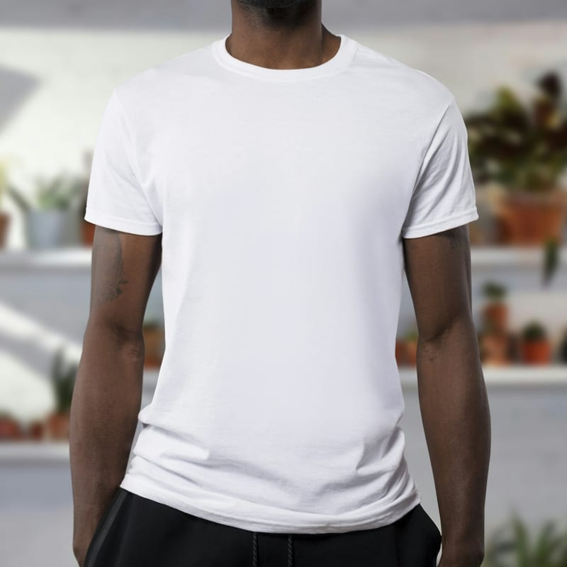
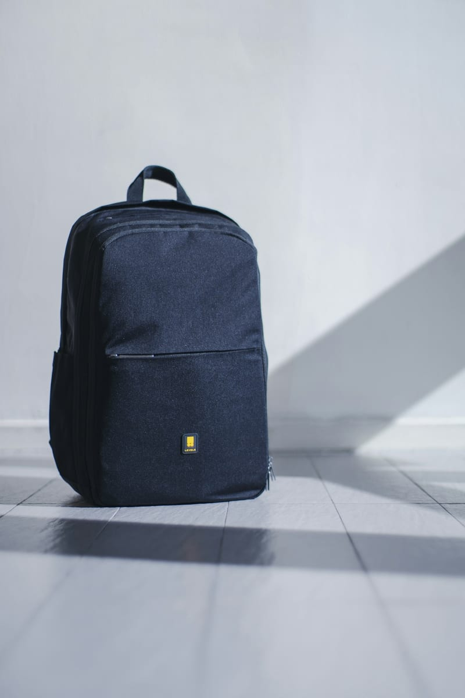
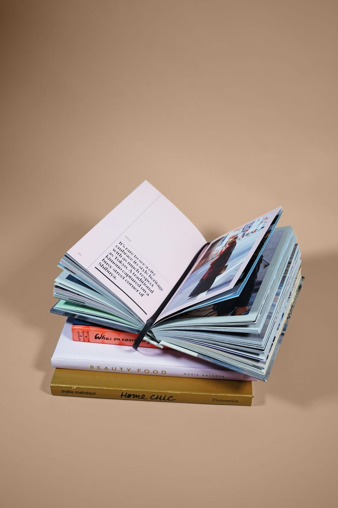
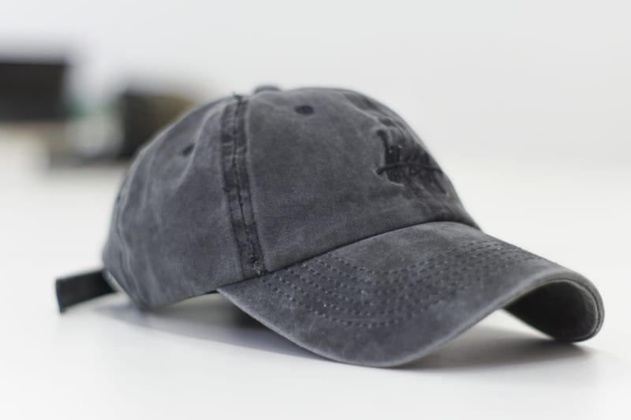

Textile artist · Dandora
Amina
Wekesa
Turns discarded fabric and plastic into sculptural, handwoven silhouettes.
View profile ↗From the largest open dumpsite in East Africa to the future of sustainable fashion — a documentary following four Nairobi designers who transform Dandora’s waste into wearable art, and a city that is beginning to notice.
01 — The visionaries
Four distinct voices. One shared material: what the city threw away. Discover the people reshaping Nairobi’s fashion language.
Textile artist · Dandora
Turns discarded fabric and plastic into sculptural, handwoven silhouettes.
View profile ↗Tailor · Eastlands
Rebuilds secondhand menswear with precise tailoring and Nairobi street codes.
View profile ↗Material researcher · Ngara
Develops soft new surfaces from bottle caps, sacks and recovered packaging.
View profile ↗Upcycler · Gikomba
Finds beauty in the irregular, making one-off garments from market remnants.
View profile ↗02 — Wear the story

Organic cotton

Reclaimed textile

First edition

One of one
03 — Beyond the screen
Step inside the world of the film. Each exhibition brings garments, portraits and recovered materials together in a tactile archive.
04 — See the film
Join a public screening or host one in your community. Selected dates include conversations with the filmmakers and designers.
05 — Walk the journey
Follow the route of a discarded garment—from the city’s edge, through hands and workshops, into a new life.
Origin · 3 hours
A guided, community-led visit tracing how materials are recovered, sorted and returned to use.
Includes transport from central Nairobi, a local guide, protective equipment and a contribution to a Dandora community initiative.
Making · 2.5 hours
Meet independent makers and see the tools, experiments and decisions behind each collection.
Visits two working studios and includes a materials demonstration, refreshments and a maker Q&A.
Systems · 4 hours
See the city-scale infrastructure that turns complex waste streams back into raw material.
A technical route designed for students, teams and curious visitors. Closed shoes are required.
Market · 3 hours
Navigate East Africa’s largest secondhand clothing market with traders, fixers and designers.
Early-morning tour with a market guide, studio stop and practical upcycling workshop.
Coming 2026 · Nairobi, Kenya
A runway, market and city-wide conversation built around the clothes already here.
Official trailer · 02:18
Trailer media is ready to be connected when the final film file or embed URL is supplied.